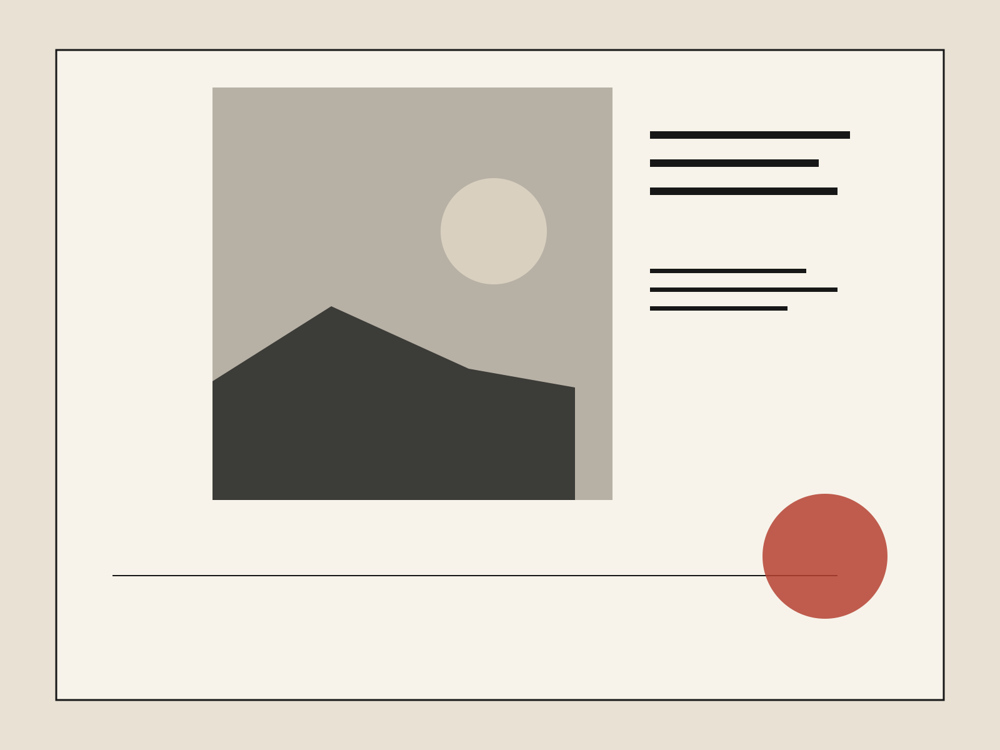
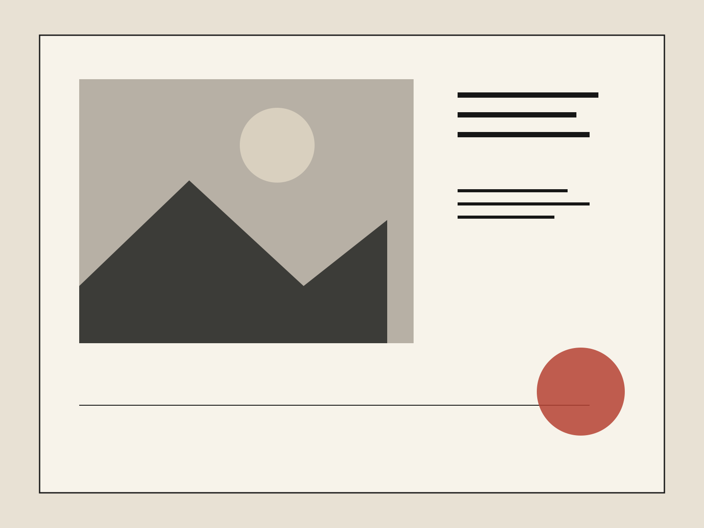
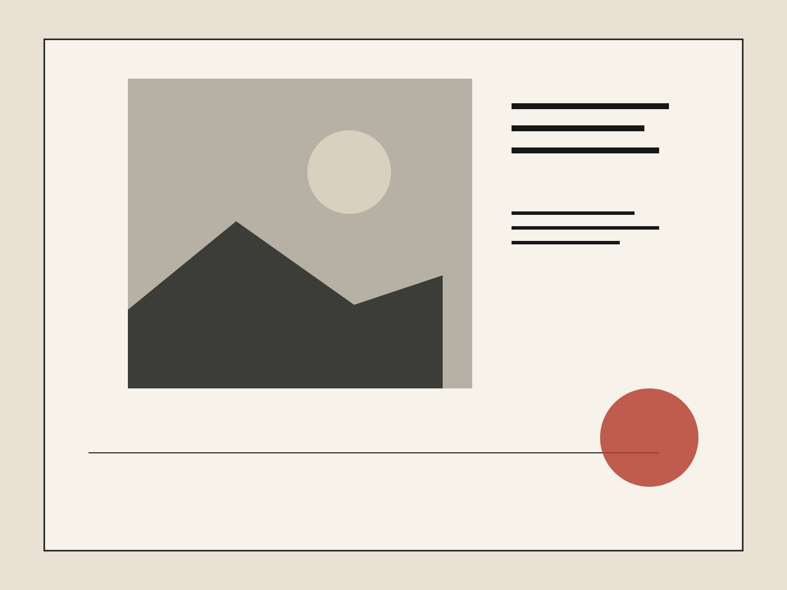

Why one good chair outlives five trends.
A visit to a workshop where repair is designed in from the beginning.

Three blocks, seven storefronts, and the people who still know how to fix things instead of replacing them.
Reporting and essays about the physical world: buildings, tools, streets, food, clothing, work, and the small systems that hold daily life together.

A visit to a workshop where repair is designed in from the beginning.

What happens when leftover urban space receives real stewardship.
Twenty-two stools, one menu, and forty years of regulars.
A municipal workshop, a shelf of obsolete gears, and the quiet maintenance behind a city’s idea of time.
Read story →